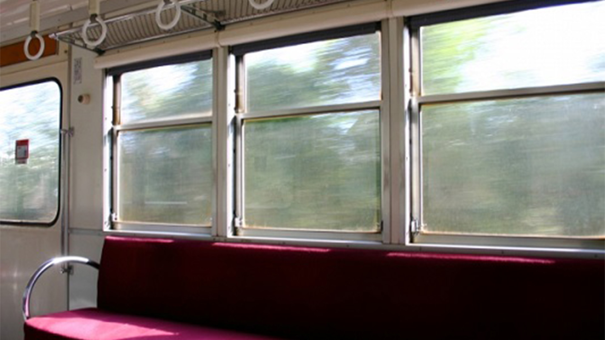
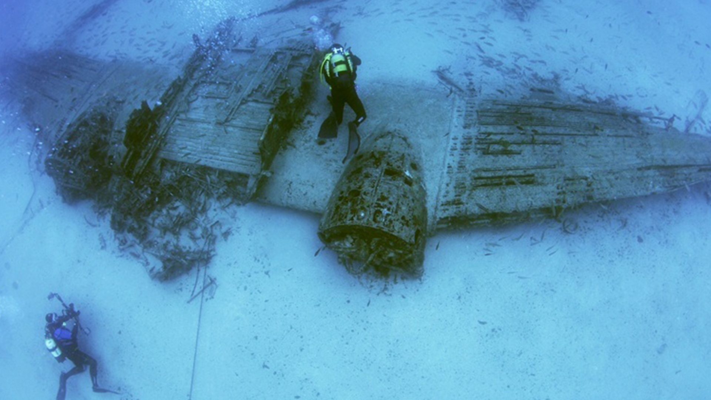

第1話
調べたい！
さくらこは体調を崩し家で寝込んでいた。新宿三丁目の駅のホームで貧血になり、倒れたのだ。その日は学校を休むことにして、家で寝ることにした。あまりスマートフォンを使わないと思ったさくらこは早速オフラインを実行した。寝ている最中、突然身体中にかゆみがでてきた。何が起きたかわからず飛び起きると、虫刺されのようなブツブツが身体中にできていた。さくらこは、そのブツブツの原因がわからず怖くなったため、慌ててオフラインを途中でやめて、ついインターネットに接続してしまった。検索バーに”ブツブツ 身体中 原因”と入れ、早速検索をした。正確なことまではわからなかったが、検索の結果、蕁麻疹だろうと彼女は思った。
課題とはいえ、緊急事態であると思いオンラインに戻したが、オフラインがあたり前の世界だったらどうしていただろうかとさくらこは考えた。この場合、そのまま皮膚科にいくのが一番いいだろう。専門家に直接見てもらったほうが原因もすぐにわかる。また、調べてから行く場合は図書館や本屋で参考資料を参照することになるだろう。しかし、今までずっとインターネットで調べて、受付もインターネット上ですべて済ませてきたさくらこには、インターネットが使えない状態で病院にいくのは不安だと思った。また、病院に行く前に自分の症状をインターネットで検索する行為が習慣付いていることに初めて気がつき、驚いてしまった。想像以上にインターネットに頼ってしまっている自分がいることを改めて実感したさくらこであった。
第2話
調べたい！（リベンジ編）
夏休みに学校の友達である丸山とタイ旅行に行くことが決まった。退屈な電車移動。タイの観光名所でも調べるかとスマートフォンを取り出す。画面の左上には飛行機のマーク。心の中で舌打ちをした。
第3話
調べたい！（完結編）
さくらこは思った。オフライン状態でもインターネットの記事を読む方法はあるのではないかと。早速調べてみた。すると、iPhoneの機能にwebページをオフライン状態でも読むことができる方法があるらしい。それは、オンライン時に事前に読みたい記事を保存しておくというものだった。前回の反省を踏まえ、電車内でオフラインにする時は事前に準備しておこうと思った。オフラインだと不便で何もできないと思っていたが、調べてみるとオフラインでもできることは意外とあるみたいだ。ただ、緊急時に対応できないところがデメリットであると思った。やはり便利とは言い難い。
第4話
LINEしたい
学校帰りの電車内。やることもなく暇を持て余しているのはいつものことだ。乗客は皆、揃いも揃ってスマートフォンに夢中になっている。一体何をそんな真剣に見ているのだろう。さくらこもスマートフォンを何気なく開いてみた。LINEのアイコンに赤い丸で①とついていた。オフラインにする前にきていた通知だ。・・・気になる。見たい。開きたい。一度そう思ってしまうと他のことが考えられなくなる。画面左上の小さな飛行機マークがいじわるしてきている感覚だ。これが大切な連絡だったら相手に迷惑がかかるなぁと思った。

第5話
遊びたい！
中学生のころからナンプレが好きだった。数学の授業中、教科書の問題を解いている間に先生が黒板にナンプレを書いてくれて、問題を解き終わった人からナンプレで遊んで良いというルールがあった。さくらこは教科書の問題をやらずにナンプレばかり解いている生徒だった。そして今まさにさくらこは電車の中でナンプレをやっている。それも、オフラインのスマートフォンで。
いままでさくらこは電車内で暇を持て余していた。できることがなくただぼーっと電車に揺られているしかなかった。
あるとき、オフラインについて調べている際、オフライン状態でも楽しめるアプリケーションがあることを知った。早速探してみると、以外にも種類豊富で、ゲームができるものや漫画やニュースなどが読めるものなどもあった。いろいろ探しているとナンプレのアプリケーションをみつけて、思い出した。「そういえばナンプレすきだったなぁ」。早速ナンプレをインストールした。楽しい。退屈な時間がワクワクに変わる瞬間を体験した気がした。
第6話
濁したい！
事件は突然起きる。
さくらこはその日アルバイトだったため、アルバイト中はずっとオフラインにしていた。その日の休憩はいつもより30分早く入ったため、あまり話したことが無い担当階の違う石黒さんと休憩が被った。休憩は45分間。さくらこはこのようなシュチュエーションに遭遇した際、必ずスマートフォンをいじってお茶を濁す。休憩室に入るや否や席を確認する。休憩室には長細いテーブルが二つ向かい合わせで置いてあり、それを６つの椅子が囲む。さくらこは石黒さんの向かいの席を選んだ。理由はそこの席だけ壁に寄り掛かることができるからだ。席に着くと石黒さんと目が合う。気まずい。さくらこはとっさに目を逸らしてしまった。インターネットでのコミュニケーションに慣れてから、人との微妙な空気感に敏感になった気がする。面と向かって人と接することは、エネルギーのいることであるし、その場の空気感や雰囲気が全て伝わってしまうところが怖いようでもあると思った。頭の中で会話の内容を考えた。「今日は天気が良いですね」や「今日は忙しいですね」など、「そうですね」という返ししか無いようなものしか思いつかず、無理に話しかけようとするのはやめた。結局、石黒さんとは一言も会話を交わさずに休憩が終わった。休憩が終わるとともに私の脳の活動も終わりをとげた。
第7話
戻りたい！
戻りたい。オンラインに戻りたい。オフラインだと通知は来ないしインターネットが繋がらなくなるから無駄にスマートフォンを眺める時間もなくなる。でも、それのなにが悪いのか。ぼーっとスマートフォンを眺めながらなにも考えない時間がわたしは好きだ。たしかに返信を返すことにめんどくささを感じている部分ももちろんある。しかし、どこかインターネットと繋がっていたい気持ちがあるのはたしかだ。返事をするのは面倒だが、すぐに返信を返せる環境にいないと不安という矛盾の感情が生まれているのは、ネット社会を生きる今の世代には必ずある感情だと思った。
